GetCoolProteopipe workflow
Gianfranco Frigerio
2026-05-04
GetCoolProteopipe_workflow.Rmd
Introduction
The GetCoolProteopipe (GCP) package is the coolest R-package for downstream analysis of MaxQuant proteomics outputs!
The package enables reproducible processing for non-programmers in the R environment, including data transformation, normalisation, missing-value imputation, batch effect correction, statistical inference and publication-ready visualisation; all in a single unified pipeline!
With GCP you can perform elaboration of both global proteomics and post-translational modifications (PTMs) analysis, and the way the latter is computed is a key novelty of this package!
In this vignette you will find a suggested workflow with an example dataset. Moreover, an R-script covering this same workflow can be downloaded from this GitHub repository at: ‘GetCoolProteopipe/inst/scripts/20260424_vignette_workflow.R’.
Citation
If you use the package, please cite:
Frigerio G, Ansermino C, Andolfo A, Braccia C. GetCoolProteopipe R-package (2026). GitHub repository. https://github.com/FrigerioGianfranco/GetCoolProteopipe.
Installation
Before installing, ensure the following are installed:
- R (version ≥ 4.3.1)
- Java (JDK), with the same architecture as R (64-bit or 32-bit).
- Git
Then open R (or RStudio) and run the following in the R console:
if (!require("devtools", quietly = TRUE)) {install.packages("devtools")}
devtools::install_github("FrigerioGianfranco/GetCoolProteopipe", dependencies = TRUE)Follow the on-screen instructions to install all the dependencies.
Troubleshooting
If an error occurs, try again by running R with administrator privileges (right-click R and select Run as administrator). If the error persists, please contact me. Thank you for reporting any issues!
Remember that the R architecture (64-bit or 32-bit) must match your Java architecture. You can check R’s architecture by running in the R console:
R.version$archTo check Java’s architecture, open Command Prompt and run:
java -versionIf the architectures do not match, re-install R or Java from the official websites. I recommend using the 64-bit architecture for both.
Loading the package
To start cool proteomics data elaboration, run the following code to load the package:

Untargeted proteomics
Import of MaxQuant output
Everything begins with the data import. For this vignette, we will use the data from a study published in 2025 (doi paper: 10.1038/s41419-025-07595-z; doi raw data: 10.6019/PXD054747), in which mouse muscle tissues were analyzed by both untargeted proteomics and PTM-based approaches.
The ImportOutputMaxQuant() function will import your data, pay attention for the most important arguments:
- MaxQuant_table_name: the “proteinGroups.txt” file (or the path file) as exported from MaxQuant within the txt folder.
- samples_info: This is optional, but if you have some metadata table about your samples, such as which samples belong to certain sample groups, you can upload it here by passing its file name (or the path file).
- fasta_database: you could leave it as missing; but if you want to
fill the missing Protein names and Gene names from MaxQuant, you can
specify either “human” or “mouse” (in this case the package will use
pre-loaded fasta tables) or if you have your own fasta table you can
write here that file name (or the path file) and it will be considered.
The
fastainput used in this function is a simplified version of the reference proteome FASTA file downloaded from the UniProt website on 05/03/2024 (or, more generally, the same FASTA file used for the MaxQuant search). The original FASTA file is adapted into a tabular format containing only three fields required for annotation: Accession, Protein name, and Gene name. - raw_or_LFQ: the output of MaxQuant usually has both raw intenstities and such intensities normalised with the “LFQ” (Label-Free Quantification) algorithm. Choose here which ones you want here to be imported for your elaborations.
- prioritize_MaxQuant_names; in case of different Protein name and Gene names from the fasta database and what imported from MaxQuant, here you can specify with TRUE if you want to prioritise names from MaxQuant.
- remove_identified_by_site, remove_reverse, remove_potential_contaminant: pass TRUE to these argument if you want to remove rows with those characteristics (an overview of this operation will be printed in the console)
proteinGroups_path <- system.file("extdata", "proteinGroups_vignettes.txt.gz", package = "GetCoolProteopipe")
GCPlist00 <- ImportOutputMaxQuant(MaxQuant_table_name = proteinGroups_path, ## you can just put the name of your file in your current working directory
samples_info = NULL, ## also here potentially
fasta_database = "mouse",
raw_or_LFQ = "raw",
prioritize_MaxQuant_names = TRUE,
remove_identified_by_site = TRUE,
remove_reverse = TRUE,
remove_potential_contaminant = TRUE)
#>
#> ___
#> At first, 1478 rows were imported
#> ...from which, 54 'Only identified by site' were removed
#> ...from which, 14 'Reverse' were removed
#> ...from which, 19 'Potential contaminant' were removed
#> In the end, 1391 rows were kept
#> ___
#>
#> -- raw intensities are being imported --Great, this creates the so-called “GCP list”! Throughout the while workflow, we will keep working on this list, which will always be made of 3 data frames:
- intensities: each row is a protein, uniquely identified by the column ‘protid’, while each other column is a sample.
head(GCPlist00$intensities)
#> # A tibble: 6 × 11
#> protid S1 S2 S3 S4 S5 V1 V2 V3 V4 V5
#> <chr> <dbl> <dbl> <dbl> <dbl> <dbl> <dbl> <dbl> <dbl> <dbl> <dbl>
#> 1 prot000… 2.70e8 0 1.19e8 1.33e8 2.86e7 2.12e8 2.06e8 1.60e8 1.81e8 6.37e7
#> 2 prot000… 8.47e7 0 1.64e8 1.50e7 0 1.51e7 1.36e8 1.60e8 2.32e8 3.96e7
#> 3 prot000… 3.36e7 0 2.08e7 3.16e7 3.10e7 6.95e6 0 2.44e7 2.23e7 2.59e7
#> 4 prot000… 6.82e8 2.69e8 1.95e8 1.32e8 6.10e8 1.50e8 6.55e8 3.06e8 2.41e8 3.31e8
#> 5 prot000… 3.44e8 9.48e7 9.37e7 7.89e7 6.36e7 3.03e7 5.56e7 1.27e8 4.57e7 1.03e8
#> 6 prot000… 6.64e7 0 5.48e6 0 1.26e7 0 0 2.46e7 4.18e6 1.28e7- proteinINFO: besides the ‘protid’ column, same as above, every column contains information related to that protein group.
head(GCPlist00$proteinINFO)
#> # A tibble: 6 × 102
#> protid `Protein IDs` `Majority protein IDs` `Peptide counts (all)`
#> <chr> <chr> <chr> <chr>
#> 1 prot000000 A0A075B5P4;A0A0A6YWR… A0A075B5P4;A0A0A6YWR2… 2;2;2;2
#> 2 prot000001 A0A075B5P6;A0A075B6A… A0A075B5P6;A0A075B6A0… 7;7;7;7
#> 3 prot000002 A0A087WNP6;Q4VAA2-2;… A0A087WNP6;Q4VAA2-2;Q… 2;2;2;1
#> 4 prot000003 A0A087WQE6;A0A087WNT… A0A087WQE6;A0A087WNT1… 5;5;5;3
#> 5 prot000004 A0A087WQF8;A0A087WP4… A0A087WQF8;A0A087WP48… 9;9;9;9;9;9;9;9;9;9;9…
#> 6 prot000005 A0A087WPL5;E9QNN1;O7… A0A087WPL5;E9QNN1;O70… 2;2;2;2;2;1;1
#> # ℹ 98 more variables: `Peptide counts (razor+unique)` <chr>,
#> # `Peptide counts (unique)` <chr>, `Protein names_MaxQuant` <chr>,
#> # `Gene names_MaxQuant` <chr>, `Fasta headers` <chr>,
#> # `Number of proteins` <dbl>, Peptides <dbl>,
#> # `Razor + unique peptides` <dbl>, `Unique peptides` <dbl>,
#> # `Peptides S1` <dbl>, `Peptides S2` <dbl>, `Peptides S3` <dbl>,
#> # `Peptides S4` <dbl>, `Peptides S5` <dbl>, `Peptides V1` <dbl>, …- sampleINFO: the information about the samples, for example the group each sample belongs to.
GCPlist00$sampleINFO
#> # A tibble: 10 × 1
#> Sample
#> <chr>
#> 1 S1
#> 2 S2
#> 3 S3
#> 4 S4
#> 5 S5
#> 6 V1
#> 7 V2
#> 8 V3
#> 9 V4
#> 10 V5Cleaning of imported data
It’s probably a good idea now to run GCP_RemoveAllZero to remove proteins that have zero as intensity in all samples, especially if working with LFQ intensities.
GCPlist01 <- GCP_RemoveAllZero(GCPlist00)
#>
#> ___
#> There are 4 rows with all zero in the intensity table, which have been removed.
#>
#> Thus, 1387 out of 1391 proteins were kept.
#> ___…and then, since the output of MaxQuant usually marks as zero the missing intensities, it’s better to replace them with actual missing values with the function GCP_ReplaceZerowithNA:
GCPlist02 <- GCP_ReplaceZerowithNA(GCPlist01)
#>
#> ______
#> The number of zeros replaced with NAs is
#> - 1121 out of 13870 (8.1%).
#> ______Managing samples
Now, there are a bunch of functions that could be used to perform simple operations directly and consistently on this list: the function names are intuitive, and you can always check the full documentation to find out about all their arguments: GCP_RemoveSamples, GCP_ReorderSamples, GCP_ChangeSampleNames, GCP_AssignGroups.
Let’s see an example of two of them:
GCPlist03 <- GCP_ChangeSampleNames(GCPlist = GCPlist02,
old_names = GCPlist02$sampleINFO$Sample,
new_names = c("S_1", "S_2", "S_3", "S_4", "S_5", "V_1", "V_2", "V_3", "V_4", "V_5"))
#>
#> ______
#> The name of samples have been updated in this way:
#>
#> ORIGINAL_NAMES NAMES_UPDATED COMMENT
#> 1 S1 S_1 Changed!
#> 2 S2 S_2 Changed!
#> 3 S3 S_3 Changed!
#> 4 S4 S_4 Changed!
#> 5 S5 S_5 Changed!
#> 6 V1 V_1 Changed!
#> 7 V2 V_2 Changed!
#> 8 V3 V_3 Changed!
#> 9 V4 V_4 Changed!
#> 10 V5 V_5 Changed!
#> ______
GCPlist04 <- GCP_AssignGroups(GCPlist = GCPlist03,
automatic_assignment = "groupfirst",
separator_automatic_assignment = "_",
name_column_groups = "Condition",
controlgroup = "S")
#>
#> ______
#> The groups have been assigned in the sampleINFO dataframes in the column named Condition, in this way:
#> Sample Condition Replicate
#> 1 S_1 S 1
#> 2 S_2 S 2
#> 3 S_3 S 3
#> 4 S_4 S 4
#> 5 S_5 S 5
#> 6 V_1 V 1
#> 7 V_2 V 2
#> 8 V_3 V 3
#> 9 V_4 V 4
#> 10 V_5 V 5
#>
#>
#> The order of the levels is the following: S V
#> ______Very important!! Either you imported the groups through an external table which file name was passed to the argument ‘samples_info’ of the function ImportOutputMaxQuant, or you created them with the function GCP_AssignGroups, you might want to pass the name of the column of the sampleINFO data frame that contains this group categorisation with the function set_name_column_groups:
set_name_column_groups("Condition")
#>
#> --- the name_column_groups is now set to be 'Condition' ---This will set an option in your working environment that, by default, will pass that name to every function that has the argument ‘name_column_groups’ (and trust me, there are a lot!)
Likewise, to color those groups consistently in all the visualisations, set the colors you want with the function set_col_pal
set_col_pal(c(S = "green", V = "orange"))
#>
#> --- the col_pal option is now set to be c(S = "green", V = "orange") ---In the example dataset we are using for this vignettes, the two sample groups (defined in the column ‘Condition’ of the sampleINFO table) are ‘S’ and ‘V’. What we set ensures that all the visualisation considering these groups will assign a green color to S and a blue color to V.
Processing
Then, to ensure a better normal distribution of the data, a log-transformation is strongly advised. Use the function GCP_LogTransformIntensities:
GCPlist05 <- GCP_LogTransformIntensities(GCPlist = GCPlist04)
#>
#> -- The base of the logarithm considered is 2 --
#>
#>
#> ______
#> All intensities have been transformed using the logarithm base 2.
#> ______A good idea might also be to remove proteins that are missing values for too many samples. We can use GCP_FilterNAperCondition and a ratio of 0.5 means that a protein will be removed if it has more than 50% of missing values in each condition (the conditions are defined, as always, by how the option ‘name_column_groups’ is set; or it can be specified explicitly the ‘name_column_groups’ argument).
GCPlist06 <- GCP_FilterNAperCondition(GCPlist = GCPlist05,
ratio = 0.5)
#>
#> -- The name_column_groups considered is 'Condition' --
#>
#>
#> _____________________
#> For the intensities table:
#> - 1293 out of 1387 where suitable for S.
#> - 1309 out of 1387 where suitable for V.
#> --> Overall, 1339 out of 1387 have been kept in the intensities table.
#> ___________________There is also another function useful to run just before the missing value imputation, useful to check how the proteins are in common or not among the groups:
GCPlist07 <- GCP_ProteinsGrouped(GCPlist06)
#>
#> -- The name_column_groups considered is 'Condition' --
#>
#>
#> The following columns have been added to the proteinINFO table:
#> present_S
#> present_V
#> combination_ConditionAnd now it’s time to impute all those missing values! We’ll be doing it with the scImpute() and tImpute() functions of the “PhosR” package, and we’ll be doing it with a simple easy step using the function GCP_NAimputation:
GCPlist08 <- GCP_NAimputation(GCPlist = GCPlist07,
quant_rate = 0.5)
#>
#> -- The name_column_groups considered is 'Condition' --
#>
#>
#> ______
#> In the intensities table, the number of NAs is:
#> - 779 / 13390 (5.8%), initially.
#> - 246 / 13390 (1.8%), after the scImpute.
#> - 0 / 13390 (0%), after the tImpute.
#> ______At this point, we could further standardise the data, if you’re not using LFQ intensities. I’d describe you the function GCP_ScaleIntensities:
- first argument, as usual, the GCPlist;
- in the ‘subtract’ argument you should specify what to subtract, i.e. how to center the data. Choose “mean” if you what to subtract the mean or “median” to subtract the median. There is actually an additional option, “shift_median”, which I’ll describe later…. (a bit of suspense for it!);
- in the argument ‘divide’ you can specify how to scale the data among: “sd” to divide for the standard deviation, “sqrt_sd” to divide for the square root of the standard deviation, “maxmin” to divide by the range (the difference between the maximum and the minimum);
- by_sample should be TRUE to perform such centering and scaling per sample, or FALSE to perform it by protein.
If, and only if, by_sample is TRUE, and if you don’t want negative values out of the centering operation, the option “shift_median” in the argument subtract will center the value to the global median (by just subtracting an offset). VERY IMPORTANT: if you do not specify anything in the last argument ‘name_column_groups’, it will take what is set in the option as usual, and this shift of the median will be performed differently for each group: i.e.: each sample of a group will be centered to the global median of its group. If you instead do not want to perform such group-wise shift, but just a shift to the global median of all the samples, remember to add and set the further argument ‘name_column_groups’ to NULL.
GCPlist09 <- GCP_ScaleIntensities(GCPlist = GCPlist08,
subtract = "shift_median",
divide = "sqrt_sd",
by_sample = TRUE)
#>
#> -- The name_column_groups considered is 'Condition' --
#>
#>
#> ______
#> Intensities have been, by sample,
#> centered to the global median for each sample group (according to the 'Condition' column),
#> divided by the square root of the standard deviation.
#> ______batch correction
I’m dedicating now a brief section for a very cool function that can turn very useful in some specific cases: when you run the analyses of your projects across different batches. Indeed, the function GCP_ComBat is a wrapper that implement the batch effects adjustment performed by the function ComBat from the “sva” R-package: All you need is to pass to the ‘batch’ argument a numeric/factor vector with the batch information (so this vector must be of the same length of the samples) or a name of the column of sampleINFO containing such information. The dataset we are using as example for this vignettes doesn’t need such a batch effects correction, but in the example below I create mock batches to show you how to use the function:
GCPlist09b <- GCPlist09
#### passing a numeric/factor vector directly to the 'batch' argument:
GCPlist09b1 <- GCP_ComBat(GCPlist = GCPlist09b,
batch = c(1, 2, 3, 1, 2, 3, 1, 2, 3, 1))
#>
#> The adjustment for batch effects is performed assigning batches to samples in this way:
#> Batch Sample
#> 1 S_1
#> 2 S_2
#> 3 S_3
#> 1 S_4
#> 2 S_5
#> 3 V_1
#> 1 V_2
#> 2 V_3
#> 3 V_4
#> 1 V_5
#>
#> Also, a column called 'Batch' has been added to sampleINFO, containing those batch indications.
#> Found3batches
#> Adjusting for0covariate(s) or covariate level(s)
#> Standardizing Data across genes
#> Fitting L/S model and finding priors
#> Finding parametric adjustments
#> Adjusting the Data
#### passing a column name of sampleINFO, containing the numeric/factor vector, to the 'batch' argument:
GCPlist09b$sampleINFO[, "batches"] <- factor(c("batch1", "batch2", "batch3", "batch1", "batch2", "batch3", "batch1", "batch2", "batch3", "batch1"), levels = c("batch1", "batch2", "batch3"))
GCPlist09b2 <- GCP_ComBat(GCPlist = GCPlist09b,
batch = "batches")
#>
#> The adjustment for batch effects is performed assigning batches to samples in this way:
#> Batch Sample
#> 1 S_1
#> 2 S_2
#> 3 S_3
#> 1 S_4
#> 2 S_5
#> 3 V_1
#> 1 V_2
#> 2 V_3
#> 3 V_4
#> 1 V_5
#> Found3batches
#> Adjusting for0covariate(s) or covariate level(s)
#> Standardizing Data across genes
#> Fitting L/S model and finding priors
#> Finding parametric adjustments
#> Adjusting the DataVisualisation of data before and after processing
We could apply all of the following visualisation functions before and after the processing, to see the difference!
The following function is not exactly a visualisation function, but it’s to test the normal distribution of the intensities:
## before processing:
GCPlist04tn <- GCP_TestNormality(GCPlist04)
#>
#> _____
#> There must be at least 3 non-missing values to perform a Shapiro-Wilk test:
#> for this reason, it is not being performed on 15 proteins.
#>
#> According to the Shapiro-Wilk test,
#> 939 out of 1372 proteins (68.4%) are normally distributed
#> 433 out of 1372 proteins (31.6%) are not normally distributed
#> _____
#>
#> The following columns have been added to the proteinINFO table:
#> shap_test_result
#> shap_test_pvalue
#> shap_test_normally_distributed
## after processing:
GCPlist09tn <- GCP_TestNormality(GCPlist09)
#>
#> _____
#> According to the Shapiro-Wilk test,
#> 1258 out of 1339 proteins (94%) are normally distributed
#> 81 out of 1339 proteins (6%) are not normally distributed
#> _____
#>
#> The following columns have been added to the proteinINFO table:
#> shap_test_result
#> shap_test_pvalue
#> shap_test_normally_distributedAs you can see from what is printed in the console, additional columns have been added to the proteinINFO table of the list, in this case with the results of the Shapiro-Wilk test. This will always happen when applying a statistical test.
Ok, let’s now visualise for real our data so far! We have plenty of cool functions, including: GCP_DensityplotIntensities, GCP_QQplotIntensities, GCP_BoxPlots, GCP_Dendogram, GCP_BarPlot, GCP_Venn. All the visualisation of this package is saved as a ggplot object: this means that you can use the ggplot grammar to further edit it. Moreover, you can use the function export_figures to quickly export it, as showed below:
## before processing:
Fig01_IntensityDistribution_before_processing <- GCP_DensityplotIntensities(GCPlist = GCPlist04,
Title = "Distribution of intensities, before processing")
# export_figures(Fig01_IntensityDistribution_before_processing) ## this would create a .png file with that name on your current working directory
print(Fig01_IntensityDistribution_before_processing)
#> Warning: Removed 1121 rows containing non-finite outside the scale range
#> (`stat_bin()`).
#> Warning: Removed 1121 rows containing non-finite outside the scale range
#> (`stat_density()`).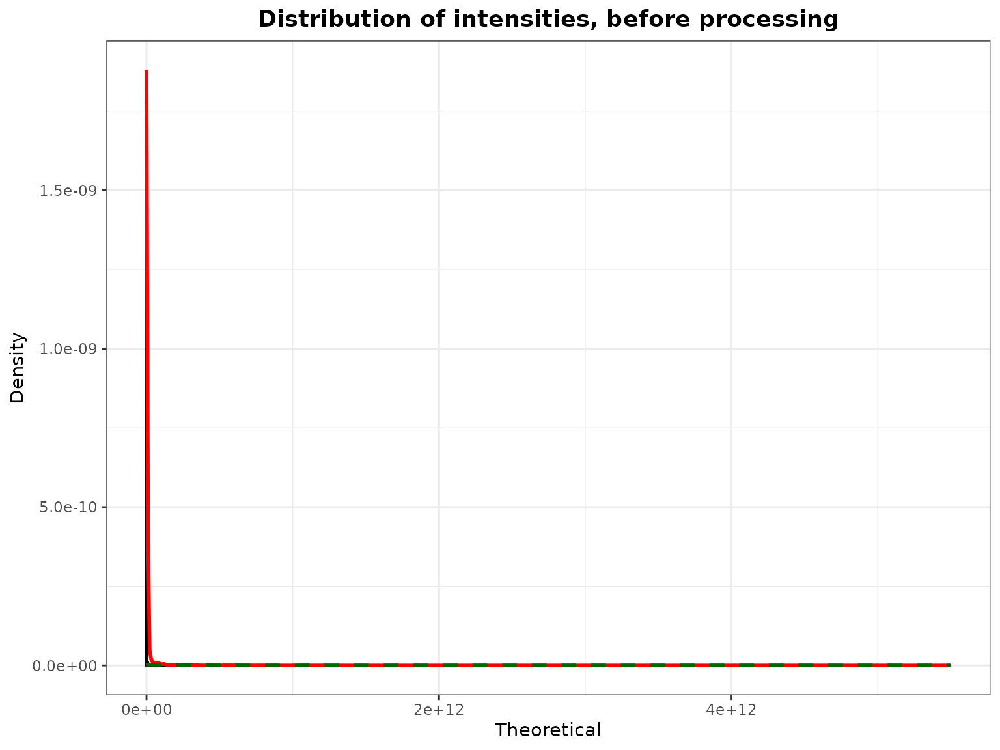
## after processing:
Fig02_IntensityDistribution_post_processing <- GCP_DensityplotIntensities(GCPlist = GCPlist09,
Title = "Distribution of intensities, post processing")
# export_figures(Fig02_IntensityDistribution_post_processing)
print(Fig02_IntensityDistribution_post_processing)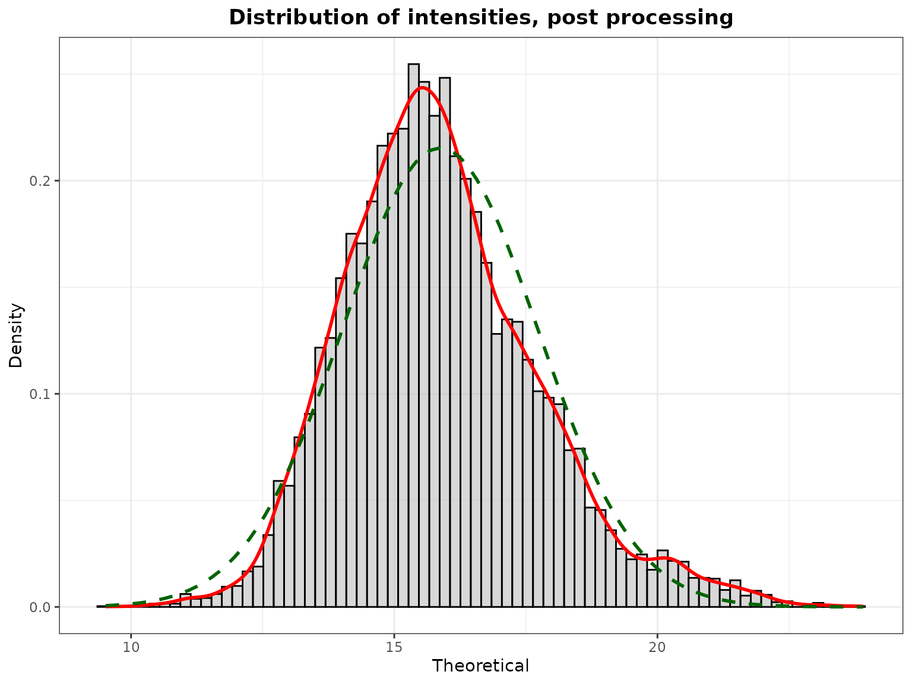
## before processing:
Fig03_QQ_plot_before_processing <- GCP_QQplotIntensities(GCPlist = GCPlist04,
Title = "QQ plot - before processing")
# export_figures(Fig03_QQ_plot_before_processing)
print(Fig03_QQ_plot_before_processing)
#> Warning: Removed 1121 rows containing non-finite outside the scale range
#> (`stat_qq()`).
#> Warning: Removed 1121 rows containing non-finite outside the scale range
#> (`stat_qq_line()`).
#> Removed 1121 rows containing non-finite outside the scale range
#> (`stat_qq_line()`).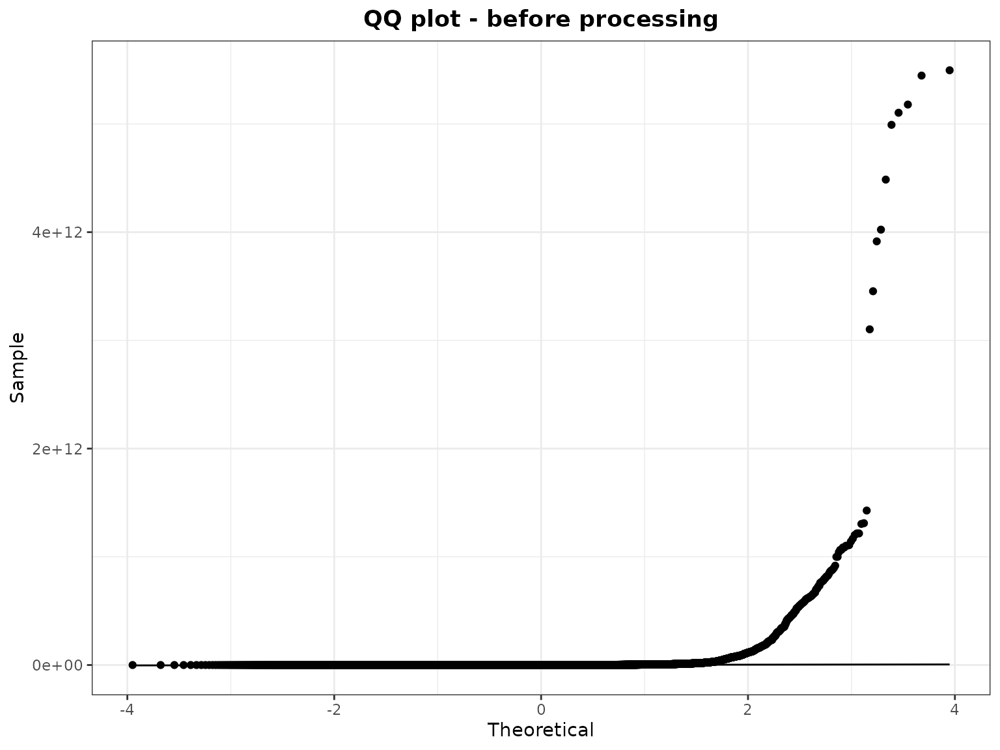
## after processing:
Fig04_QQ_plot_post_processing <- GCP_QQplotIntensities(GCPlist = GCPlist09,
Title = "QQ plot - post processing")
# export_figures(Fig04_QQ_plot_post_processing)
print(Fig04_QQ_plot_post_processing)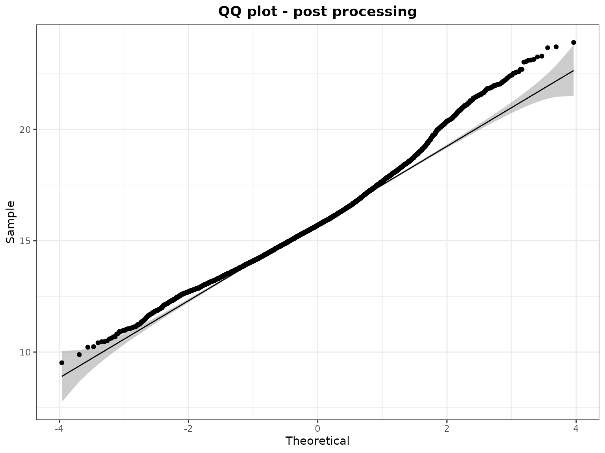
Great! Let’s look now at the bar plots of proteins per samples and at the Venn graph showing proteins shared by the groups. To do so, use the dataset just before performing the missing value imputation!
Fig05_BarPlot_post_filteringNA <- GCP_BarPlot(GCPlist = GCPlist07,
label_numbers = TRUE,
showCV = TRUE,
rotate_sample_names = TRUE)
#>
#> -- The name_column_groups considered is 'Condition' --
#>
#> --- col_pal is c(S = "green", V = "orange") ---
# export_figures(Fig05_BarPlot_post_filteringNA)
print(Fig05_BarPlot_post_filteringNA)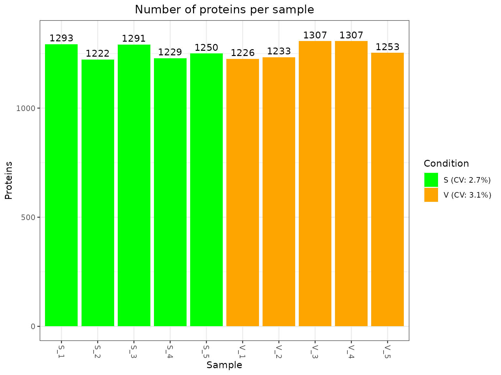
Fig06_Venn_post_filteringNA <- GCP_Venn(GCPlist07)
#>
#> -- The name_column_groups considered is 'Condition' --
#>
#> --- col_pal is c(S = "green", V = "orange") ---
# export_figures(Fig06_Venn_post_filteringNA)
print(Fig06_Venn_post_filteringNA)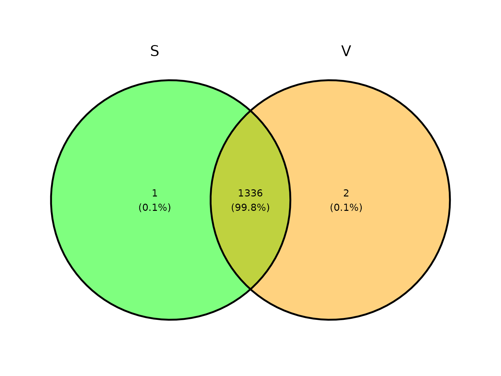
Look at the Venn graph we just created: curious to know more about those lonely proteins, aren’t you?? Which one can they possibly be??? No need to freak out!! Do you remember that we run GCP_ProteinsGrouped to mark them on the proteinINFO table?
If, in addition to that, you want to have a nice overview, you can run GCP_ProteinsGroupedSummary which should give you the same numbers in the Venn graph. The added benefit is that, while Venn graph are limited to a maximum of 4 groups, this approach can be applied to even more, should you have!
SummaryTable_ProteinsGrouped_filteringNA <- GCP_ProteinsGroupedSummary(GCPlist07)
#>
#> -- The name_column_groups considered is 'Condition' --
# export_the_table(SummaryTable_ProteinsGrouped_filteringNA) ## this would quickly export that table in your working directory!
print(SummaryTable_ProteinsGrouped_filteringNA)
#> # A tibble: 4 × 3
#> combination_Condition N perc
#> <fct> <int> <dbl>
#> 1 "" 48 3.46
#> 2 "S" 1 0.0721
#> 3 "V" 2 0.144
#> 4 "S_V" 1336 96.3Finally, here are some nice box plots and dendrograms:
## before processing:
Fig07_BoxPlot_before_processing <- GCP_BoxPlots(GCPlist = GCPlist04,
by_samples = TRUE,
Title = "Distribution of intensities, before processing")
#>
#> -- The name_column_groups considered is 'Condition' --
#>
#> --- col_pal is c(S = "green", V = "orange") ---
# export_figures(Fig07_BoxPlot_before_processing)
print(Fig07_BoxPlot_before_processing)
#> Warning: Removed 1121 rows containing non-finite outside the scale range
#> (`stat_boxplot()`).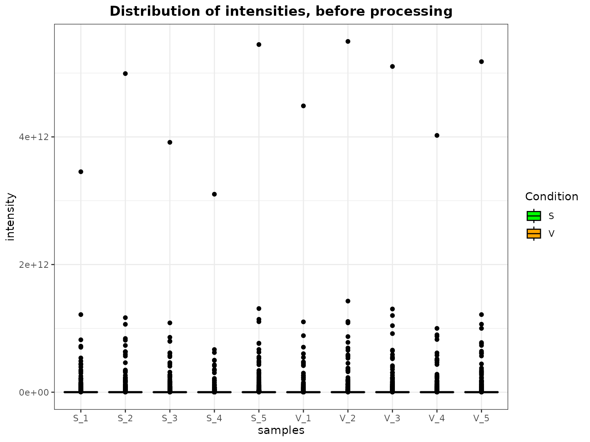
## after processing:
Fig08_BoxPlot_post_processing <- GCP_BoxPlots(GCPlist = GCPlist09,
by_samples = TRUE,
Title = "Distribution of intensities, post processing")
#>
#> -- The name_column_groups considered is 'Condition' --
#>
#> --- col_pal is c(S = "green", V = "orange") ---
# export_figures(Fig08_BoxPlot_post_processing)
print(Fig08_BoxPlot_post_processing)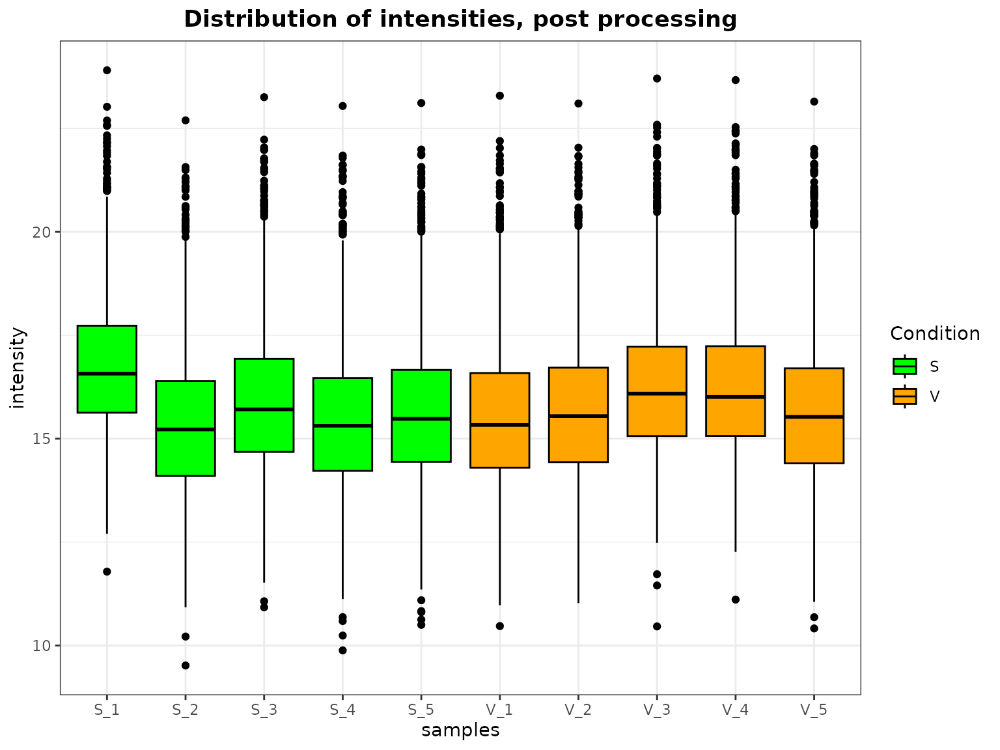
## before processing:
Fig09_Dendogram_before_processing <- GCP_Dendogram(GCPlist04)
#>
#> -- The name_column_groups considered is 'Condition' --
#>
#> --- col_pal is c(S = "green", V = "orange") ---
# export_figures(Fig09_Dendogram_before_processing)
print(Fig09_Dendogram_before_processing)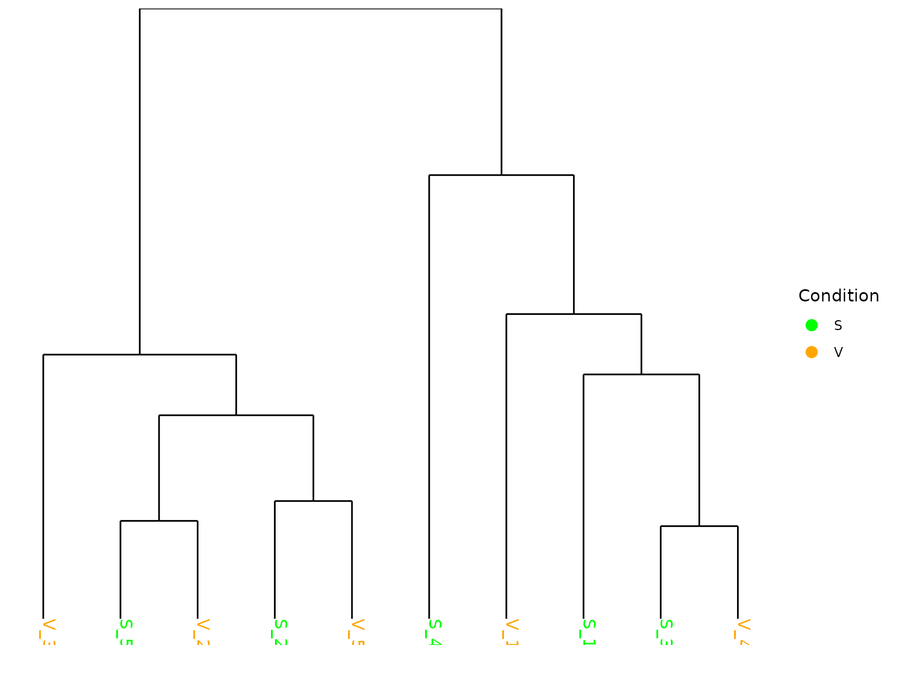
## after processing:
Fig10_Dendogram_post_processing <- GCP_Dendogram(GCPlist09)
#>
#> -- The name_column_groups considered is 'Condition' --
#>
#> --- col_pal is c(S = "green", V = "orange") ---
# export_figures(Fig10_Dendogram_post_processing)
print(Fig10_Dendogram_post_processing)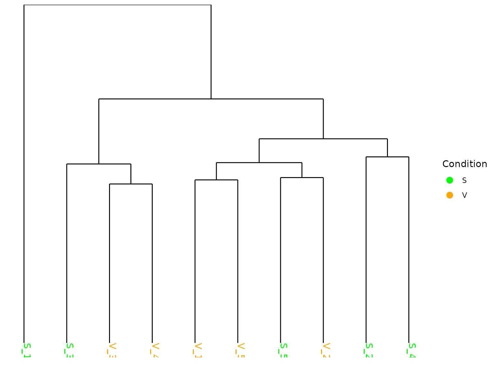
One more visualisation and unsupervised multivariate statistical analysis: the Principal Component Analysis. There are two functions that perform it: GCP_plotPCA produces a plot (a ggplot, as always!), while GCP_PCA() actually computes the scores and the loadings of the principal components and adds them to the sampleINFO table and protinINFO table, respectively.
Fig11_PCA_score_plot <- GCP_plotPCA(GCPlist = GCPlist09,
scores_or_loadings = "scores",
PC_to_plot = c("PC1", "PC2"),
name_column_labels = "Sample",
ellipses_on_score = TRUE)
#>
#> -- The name_column_groups considered is 'Condition' --
#>
#> --- col_pal is c(S = "green", V = "orange") ---
# export_figures(Fig11_PCA_score_plot)
print(Fig11_PCA_score_plot)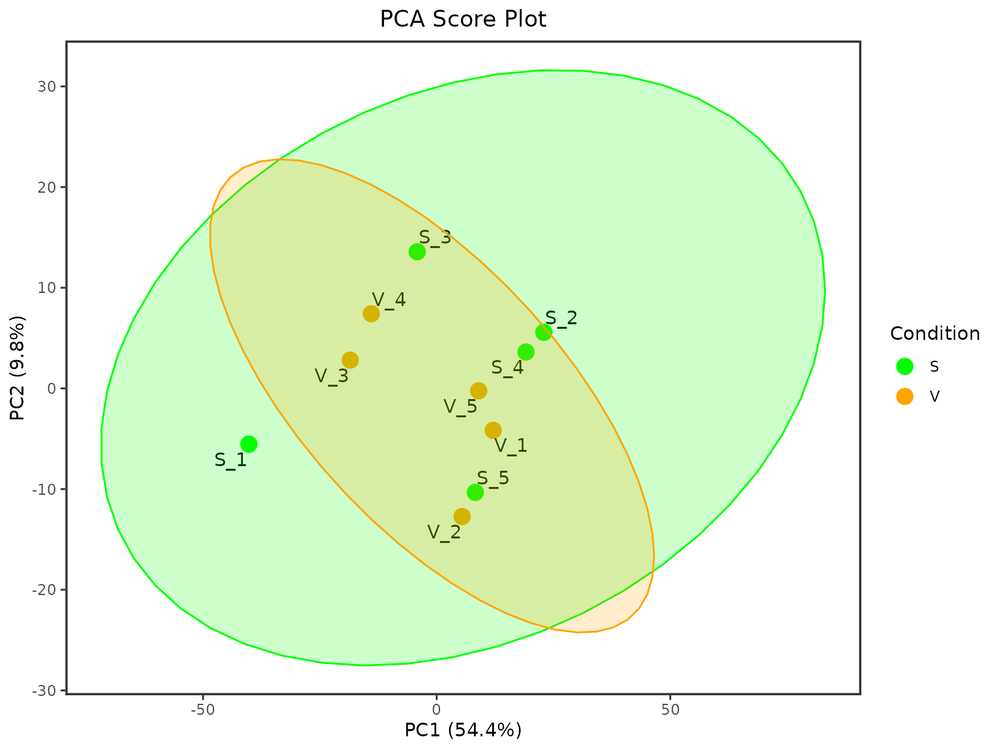
Fig12_PCA_loading_plot <- GCP_plotPCA(GCPlist = GCPlist09,
scores_or_loadings = "loadings",
PC_to_plot = c("PC1", "PC2"),
name_column_groups_loading = NULL,
name_column_labels_loading = "Protein names",
col_pal_loading = NULL,
ellipses_on_loading = FALSE)
#>
#> -- The name_column_groups considered is 'Condition' --
#>
#> --- col_pal is c(S = "green", V = "orange") ---
# export_figures(Fig12_PCA_loading_plot)
print(Fig12_PCA_loading_plot)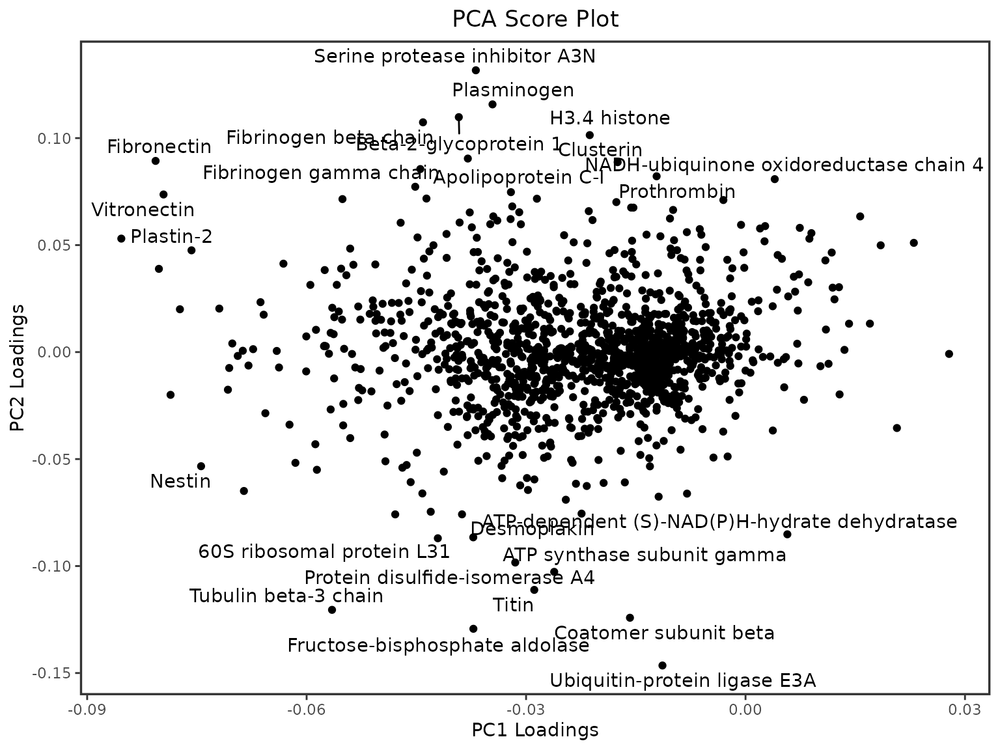
GCPlist10 <- GCP_PCA(GCPlist = GCPlist09)
#>
#> The following columns have been added to the sampleINFO table:
#> PC1_scores
#> PC2_scores
#> PC3_scores
#> PC4_scores
#> PC5_scores
#> PC6_scores
#> PC7_scores
#> PC8_scores
#> PC9_scores
#> PC10_scores
#>
#> The following columns have been added to the proteinINFO table:
#> PC1_loadings
#> PC2_loadings
#> PC3_loadings
#> PC4_loadings
#> PC5_loadings
#> PC6_loadings
#> PC7_loadings
#> PC8_loadings
#> PC9_loadings
#> PC10_loadingsStatistics
In the example dataset we are looking at in this vignette we have two groups: that’s the perfect scenario for running a t-test. The following code provides an example of how to use GCP_ttest to perform a paired t-test, with the additional Benjamini-Hochberg False Discovery Rate (FDR) p-value correction.
GCPlist11 <- GCP_ttest(GCPlist = GCPlist10,
paired = TRUE,
FDR = TRUE,
pcutoff = 0.05)
#>
#> -- The name_column_groups considered is 'Condition' --
#>
#>
#> The following columns have been added to the proteinINFO table:
#> ttest_Pvalues
#> ttest_PvaluesFDR
#> ttest_group_diff
#> ttest_group_diff_FDRWe might want to also look at the Fold Change with the function GCP_FoldChange! The following code computes a paired Fold Change (FC) analysis on our data. Note that passing TRUE to the argument ‘are_log_transf’ will tell to the algorithm that the data are log-transformed, and so the FC will be actually calculated with a subtraction, instead of a division! Also, even if it’s not reported in the example below, a potential further argument ‘control_group’ would allow you to set what you want as control group, just to be sure.
GCPlist12 <- GCP_FoldChange(GCPlist = GCPlist11,
paired = TRUE,
are_log_transf = TRUE)
#>
#> -- The name_column_groups considered is 'Condition' --
#>
#>
#> "S" has been used as control group. If that is not fine for you, specify which group you want in the argument control_group
#>
#>
#> -- The log_base considered is 2 --
#>
#>
#> The following columns have been added to the proteinINFO table:
#> V_vs_S_FC
#> V_vs_S_logFCIf you have more than two groups, you would instead run an ANOVA analysis. Below I’m going to create four mock groups and run a one-way ANOVA with Tukey HSD post-hoc test with GCP_ANOVA, and also FC analyses considering all group pairs with GCP_FoldChange_Multi.
GCPlist12a <- GCPlist12
GCPlist12a$sampleINFO[, "Group_multi"] <- factor(c("gr1", "gr1", "gr2", "gr2", "gr3", "gr3", "gr3", "gr4", "gr4", "gr4"), levels = c("gr1", "gr2", "gr3", "gr4"))
GCPlist12a1 <- GCP_ANOVA(GCPlist = GCPlist12a,
name_column_groups = "Group_multi")
#>
#> -- The name_column_groups considered is 'Group_multi' --
#>
#>
#> The following columns have been added to the proteinINFO table:
#> ANOVA_Group_multi_Pvalue
#> ANOVA_gr2_vs_gr1_Pvalue
#> ANOVA_gr3_vs_gr1_Pvalue
#> ANOVA_gr4_vs_gr1_Pvalue
#> ANOVA_gr3_vs_gr2_Pvalue
#> ANOVA_gr4_vs_gr2_Pvalue
#> ANOVA_gr4_vs_gr3_Pvalue
#> ANOVA_Group_multi_PvalueFDR
#> ANOVA_gr2_vs_gr1_PvalueFDR
#> ANOVA_gr3_vs_gr1_PvalueFDR
#> ANOVA_gr4_vs_gr1_PvalueFDR
#> ANOVA_gr3_vs_gr2_PvalueFDR
#> ANOVA_gr4_vs_gr2_PvalueFDR
#> ANOVA_gr4_vs_gr3_PvalueFDR
#> ANOVA_gr2_vs_gr1
#> ANOVA_gr3_vs_gr1
#> ANOVA_gr4_vs_gr1
#> ANOVA_gr3_vs_gr2
#> ANOVA_gr4_vs_gr2
#> ANOVA_gr4_vs_gr3
#> ANOVA_gr2_vs_gr1_FDR
#> ANOVA_gr3_vs_gr1_FDR
#> ANOVA_gr4_vs_gr1_FDR
#> ANOVA_gr3_vs_gr2_FDR
#> ANOVA_gr4_vs_gr2_FDR
#> ANOVA_gr4_vs_gr3_FDR
GCPlist12a2 <- GCP_FoldChange_Multi(GCPlist = GCPlist12a1,
name_column_groups = "Group_multi",
paired = FALSE,
are_log_transf = TRUE)
#>
#> -- The name_column_groups considered is 'Group_multi' --
#>
#>
#> -- The log_base considered is 2 --
#>
#>
#> The following columns have been added to the proteinINFO table:
#> gr2_vs_gr1_FC
#> gr2_vs_gr1_logFC
#> gr3_vs_gr1_FC
#> gr3_vs_gr1_logFC
#> gr4_vs_gr1_FC
#> gr4_vs_gr1_logFC
#> gr3_vs_gr2_FC
#> gr3_vs_gr2_logFC
#> gr4_vs_gr2_FC
#> gr4_vs_gr2_logFC
#> gr4_vs_gr3_FC
#> gr4_vs_gr3_logFCVisualisation of significant proteins
And now, why not creating a graph plotting the negative logarithm of p-values from the t-test on the Y-axis, and the FC analysis on the X-axis? Easy-job with GCP_Volcano!
Fig13_Volcano_plot <- GCP_Volcano(GCPlist = GCPlist12,
x_val = "logFC",
y_val = "ttest_Pvalues",
pcutoff_colored = 0.05,
pcutoff_line = 0.05,
pcutoff_prot_label = 0.005,
name_column_proteinlabels = "Protein names",
name_column_proteingroups = NULL,
col_pal_difference = c("grey", "blue", "red"),
col_pal_groups = NULL)
#>
#> -- The log_base considered is 2 --
# export_figures(Fig13_Volcano_plot)
print(Fig13_Volcano_plot)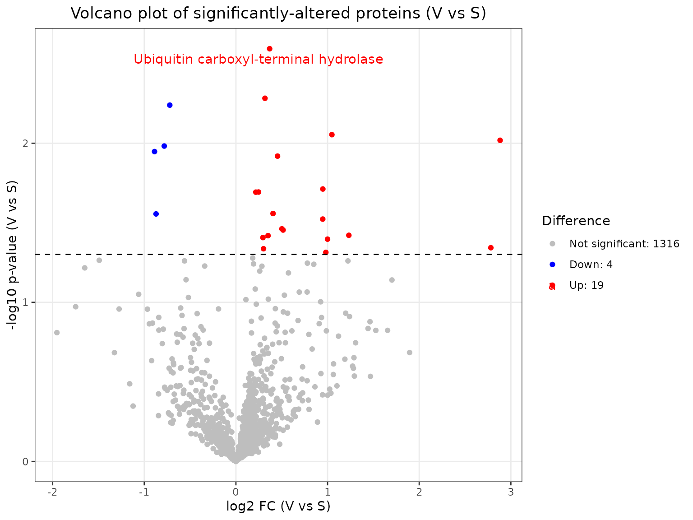
You can do it also with the results of the GCP_ANOVA post-hoc using the p-value of a pairwise group comparison and the same pairwise Fold Change obtained from the GCP_FoldChange_Multi: just write the name of the p-value column in the x_val argument, and the name of the logFC column in the y_val argument.
Then, we might want to perform an heat map only on statistically significantly different proteins between the two groups (let’s consider again the original two groups for this example). We can keep only significant proteins with GCP_FilterProteins:
GCPlist12f <- GCP_FilterProteins(GCPlist = GCPlist12,
operation = "ttest_Pvalues < 0.05")
#>
#> intensities
#> Initially, the number of proteins were 1339
#> after ttest_Pvalues < 0.05 23And so we run GCP_HeatMap. I know it’s a function with a of overwhelming assemble of arguments, but trust me they are there to offer you the maximum personalisation of the HeatMap. I would mention some: - name_column_groups: here it can be more than one! If more categorisation of the samples are passed (as column names of the sampleINFO table), multiple bars will be showed! - name_column_groups_protein: exactly the same of name_column_groups, but for proteins, so for column names of proteinINFO! Use it if you have proteins belonging to certain categories. - col_pal_list: pass the colors you want for those groups as a list!
Fig14_The_Heat_Map_sign <- GCP_HeatMap(GCPlist = GCPlist12f,
name_column_groups = c("Condition", "Replicate"),
name_column_labels = "Sample",
name_column_groups_protein = NULL,
name_column_labels_protein = "Protein names",
name_rows = FALSE,
name_columns = TRUE,
rotate_name_columns = TRUE,
col_pal_list = list(Condition = c(S = "green", V = "blue"),
Replicate = c("lightskyblue", "lightskyblue1", "lightskyblue2", "lightskyblue3", "lightskyblue4")))
#>
#> -- The name_column_groups considered is c('Condition', 'Replicate') --
#>
#>
#> -- col_pal_list is a list of colors:
#> $Condition
#> S V
#> "green" "blue"
#>
#> $Replicate
#> [1] "lightskyblue" "lightskyblue1" "lightskyblue2" "lightskyblue3"
#> [5] "lightskyblue4"
#>
#> --
# export_figures(Fig14_The_Heat_Map_sign)
print(Fig14_The_Heat_Map_sign)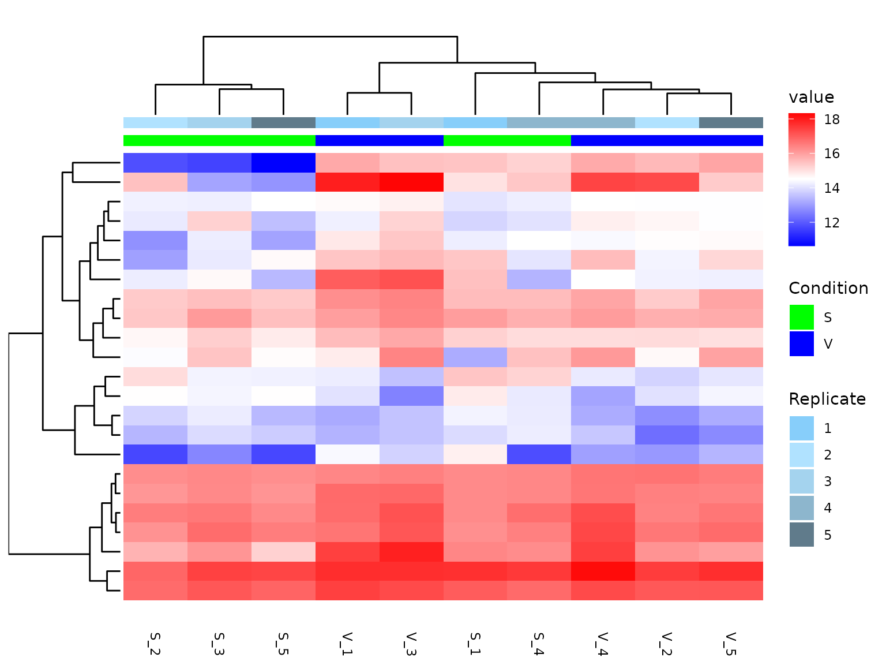
Still working only on significant proteins, we could now perform box-plots sample-wise, so showing the distribution of single proteins in all the samples grouped by conditions (while the box-plots we saw before were protein-wise, i.e.: showing the distributions of all the protein intensities in each sample). To do it, the function is the same, GCP_BoxPlots, but just set the argument ‘by_samples’ as FALSE. Watch out that this will create a list of ggplot objects, one for each protein, and what is exported as indicated in the code below will be single file for each of those.
Fig15_BoxPlots_sign <- GCP_BoxPlots(GCPlist = GCPlist12f,
by_samples = FALSE)
#>
#> -- The name_column_groups considered is 'Condition' --
#>
#> --- col_pal is c(S = "green", V = "orange") ---
# export_figures(Fig15_BoxPlots_sign) ## exporting each box-plot as a single png file
# export_figures(Fig15_BoxPlots_sign, exprt_fig_type = "pdf") ## exporting all box-plots in a pdf file with many pages
print(Fig15_BoxPlots_sign[1:4])
#> $prot000041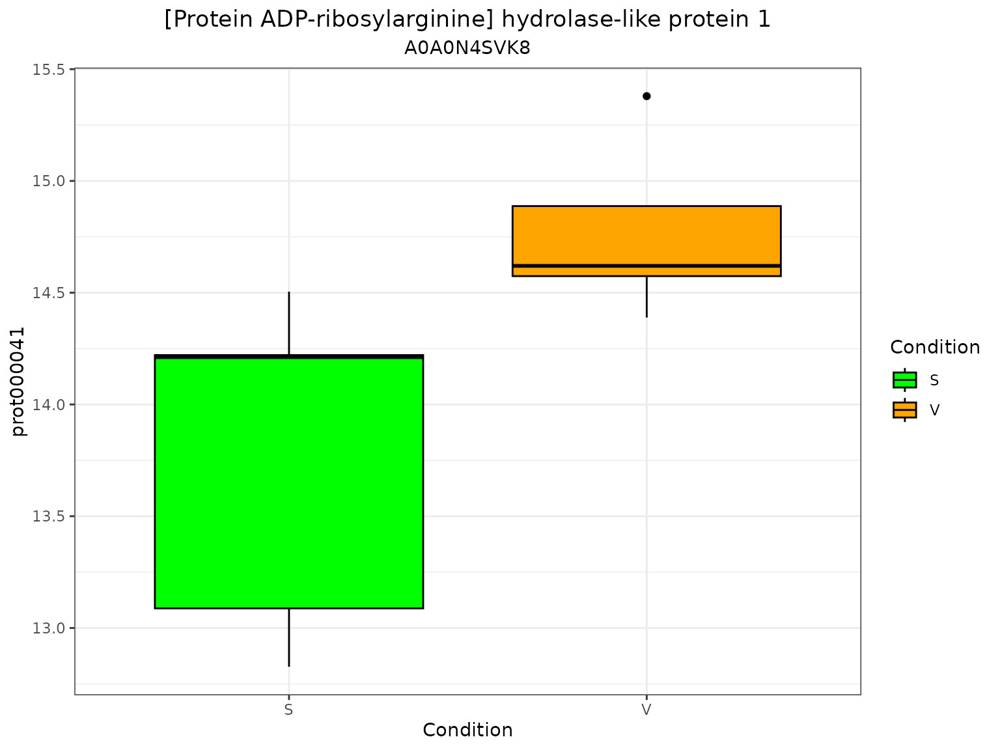
#>
#> $prot000044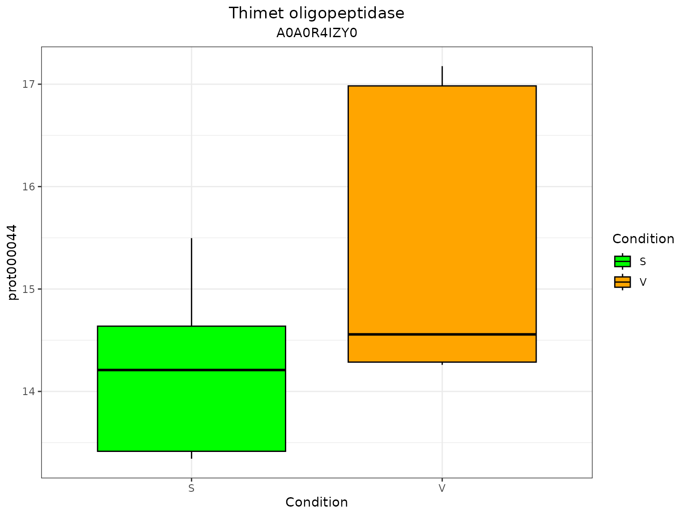
#>
#> $prot000124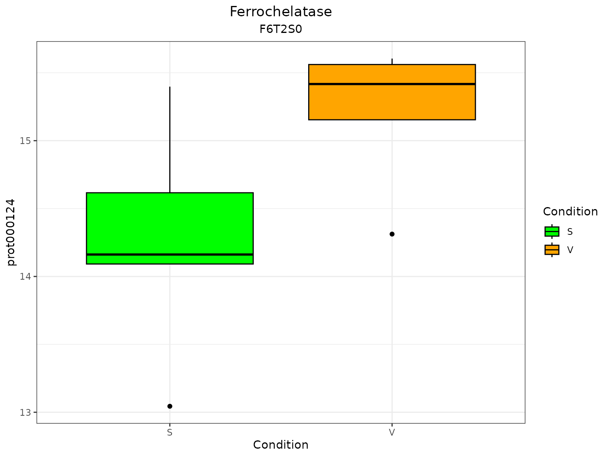
#>
#> $prot000253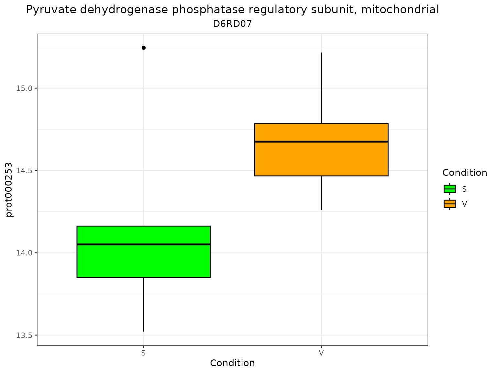
export
Working on R is really amazing, isn’t it?!! But I guess at some point you want to export these elaborations so you can better visualise the big tables, don’t you? You can do it at any time with the function ExportGCPlist. You can export in different ways, and you can either export a single GCPlist or multiple GCPlists at once.
To export a single GCPlist. - pass it to the first argument of ExportGCPlist. - In the second argument, ‘filename’, put the name of the file that will be created (must ends in “.txt”, “.csv”, or “.xlsx”). - In the third argument, ‘exportype’ you can choose if you want to export the intensities, proteinINFO, or sampleINFO table. Moreover, if you select “all”, intensities and proteinINFO will be put together and exported together! Moreover, if you select “sheets”, all of them will be exported in three different sheets of an Excel file. - additional arguments include ‘intensity_indication’, ‘protgenenames’, ‘protIDclean’, ‘specific_columns’ which give you the possibility of some more personalisation, check the full documentation for those, or leave the default settings, hopefully you will like the outcome anyways!
Since you don’t necessarly need all those arguments, here the simplest code to export efficiently a single GCPlist. This simple command will export: protid, Accession, Protein names, Gene names, the intensities, and all the results we computed (such as the Shapiro-Wilk test, the presence of protein per group, the Principal Components, the t-test, the Fold Change…):
ExportGCPlist(GCPlist12, "GCPlist12_single_export.txt")To export at once multiple GCPlists, just pass a list of such lists to the first argument and indicate a file name that ends with “.xlsx” in the second argument. This is really cool!
GCPlist_of_lists <- list(asimported = GCPlist00,
`before processing` = GCPlist04,
`post processing` = GCPlist09,
with_statistics = GCPlist12,
with_mock_ANOVA = GCPlist12a2,
with_mock_batchcorr = GCPlist09b2)
ExportGCPlist(GCPlist_of_lists, "GCPlists_multiple_export.xlsx")Post-translational modifications (PTMs)
A key highlight of this package is that it elaborates data from post-translational modifications (PTMs) experiment. The two functions specifically developed for that are: ImportPTMs and GCP_ratioPTMprotein. In the example below we’ll be using the first one at the beginning and the latter at the end, in the middle we’ll be using a bunch of the functions we already saw!
To import a dataset, the function ImportPTMs is very very similar to ImportOutputMaxQuant we saw. The only two particular arguments of ImportPTMs are: - ‘pattern_intensity’, which should be the character contained in the intensity columns to uniquely identify them: in our example they are “Intensity S1”, “Intensity S2”, “Intensity S3” … so we can use “Intensity” as ‘pattern_intensity’. - ‘pattern_isoforms’, if you also want to import the different isoforms of each peptide (due to missed cleavages) as separate rows, in addition to the previous argument, also specify here the pattern that can identify the different isoforms of peptides: in our example “Intensity S1_1”, ”Intensity S1_2”, “Intensity S1_3”, … so we can use ”_” as such pattern. The object created will still be a GCPlist (a list with the three tables: intesities, proteinINFO, and sampleINFO).
proteinGroupsPTM_path <- system.file("extdata", "AcetylKSites_vignettes.txt.gz", package = "GetCoolProteopipe")
GCPlistPTM00 <- ImportPTMs(MaxQuant_table_name = proteinGroupsPTM_path, ## you can just put the name of your file in your current working directory
samples_info = NULL, ## also here potentially
fasta_database = "mouse",
prioritize_MaxQuant_names = TRUE,
pattern_intensity = "Intensity ",
pattern_isoforms = "___")
#> Rows: 227 Columns: 151
#> ── Column specification ────────────────────────────────────────────────────────
#> Delimiter: "\t"
#> chr (35): Proteins, Positions within proteins, Leading proteins, Protein, P...
#> dbl (115): Localization prob, Score diff, PEP, Score, Delta score, Score for...
#> lgl (1): Fasta headers
#>
#> ℹ Use `spec()` to retrieve the full column specification for this data.
#> ℹ Specify the column types or set `show_col_types = FALSE` to quiet this message.
#>
#> ___
#> Considering the pattern_intensity 'Intensity ', and the pattern_isoforms '___' the following sample intensities were considered:
#> 'Intensity S1'
#> 'Intensity S2'
#> 'Intensity S3'
#> 'Intensity S4'
#> 'Intensity S5'
#> 'Intensity V1'
#> 'Intensity V2'
#> 'Intensity V3'
#> 'Intensity V4'
#> 'Intensity V5'
#>
#> repeated for the following isoforms:
#> '___1'
#> '___2'
#> '___3'
#>
#> ___Let’s further improve the sample names using GCP_ChangeSampleNames:
GCPlistPTM01 <- GCP_ChangeSampleNames(GCPlist = GCPlistPTM00,
old_names = GCPlistPTM00$sampleINFO$Sample,
new_names = c("S_1", "S_2", "S_3", "S_4", "S_5", "V_1", "V_2", "V_3", "V_4", "V_5"))
#>
#> ______
#> The name of samples have been updated in this way:
#>
#> ORIGINAL_NAMES NAMES_UPDATED COMMENT
#> 1 Intensity S1 S_1 Changed!
#> 2 Intensity S2 S_2 Changed!
#> 3 Intensity S3 S_3 Changed!
#> 4 Intensity S4 S_4 Changed!
#> 5 Intensity S5 S_5 Changed!
#> 6 Intensity V1 V_1 Changed!
#> 7 Intensity V2 V_2 Changed!
#> 8 Intensity V3 V_3 Changed!
#> 9 Intensity V4 V_4 Changed!
#> 10 Intensity V5 V_5 Changed!
#> ______Followed by a similar workflow to the one we previously saw:
GCPlistPTM02 <- GCP_AssignGroups(GCPlist = GCPlistPTM01,
automatic_assignment = "groupfirst",
separator_automatic_assignment = "_",
name_column_groups = "Condition",
controlgroup = "S")
#>
#> ______
#> The groups have been assigned in the sampleINFO dataframes in the column named Condition, in this way:
#> Sample Condition Replicate
#> 1 S_1 S 1
#> 2 S_2 S 2
#> 3 S_3 S 3
#> 4 S_4 S 4
#> 5 S_5 S 5
#> 6 V_1 V 1
#> 7 V_2 V 2
#> 8 V_3 V 3
#> 9 V_4 V 4
#> 10 V_5 V 5
#>
#>
#> The order of the levels is the following: S V
#> ______
set_name_column_groups("Condition")
#>
#> --- the name_column_groups is now set to be 'Condition' ---
GCPlistPTM03 <- GCP_RemoveAllZero(GCPlistPTM02)
#>
#> ___
#> There are 451 rows with all zero in the intensity table, which have been removed.
#>
#> Thus, 230 out of 681 proteins were kept.
#> ___
GCPlistPTM04 <- GCP_ReplaceZerowithNA(GCPlistPTM03)
#>
#> ______
#> The number of zeros replaced with NAs is
#> - 933 out of 2300 (40.6%).
#> ______
GCPlistPTM05 <- GCP_LogTransformIntensities(GCPlist = GCPlistPTM04)
#>
#> -- The base of the logarithm considered is 2 --
#>
#>
#> ______
#> All intensities have been transformed using the logarithm base 2.
#> ______
GCPlistPTM06 <- GCP_FilterNAperCondition(GCPlist = GCPlistPTM05,
ratio = 0.5)
#>
#> -- The name_column_groups considered is 'Condition' --
#>
#>
#> _____________________
#> For the intensities table:
#> - 130 out of 230 where suitable for S.
#> - 139 out of 230 where suitable for V.
#> --> Overall, 156 out of 230 have been kept in the intensities table.
#> ___________________
GCPlistPTM07 <- GCP_NAimputation(GCPlist = GCPlistPTM06,
quant_rate = 0.5)
#>
#> -- The name_column_groups considered is 'Condition' --
#>
#>
#> ______
#> In the intensities table, the number of NAs is:
#> - 359 / 1560 (23%), initially.
#> - 149 / 1560 (9.6%), after the scImpute.
#> - 0 / 1560 (0%), after the tImpute.
#> ______
GCPlistPTM08 <- GCP_ScaleIntensities(GCPlist = GCPlistPTM07,
subtract = "shift_median",
divide = "sqrt_sd",
by_sample = TRUE)
#>
#> -- The name_column_groups considered is 'Condition' --
#>
#>
#> ______
#> Intensities have been, by sample,
#> centered to the global median for each sample group (according to the 'Condition' column),
#> divided by the square root of the standard deviation.
#> ______So, the peculiar function GCP_ratioPTMprotein will do something fundamental and unique. It has two simple arguments we must fill: a GCPlist created from PTMs and a GCPlist created from proteins. Then, for each feature intensity of the PTM, it will check if there is a corresponding protein based on a matching Accession number and, if there is, it will divide those intensities. If there is not, it will simple remove those intensities. There is actually a third argument: if the data are log-transformed (such in our example) set ‘are_log_transf’ as TRUE, so the subtraction will be performed instead of the division.
GCPlistPTM09 <- GCP_ratioPTMprotein(GCPlistPTM = GCPlistPTM08,
GCPlistProteins = GCPlist12,
are_log_transf = TRUE)
#>
#>
#> 29 out of 156 has been removed as there is no correspondence with any Accession in the protein table:
#> protid Accession
#> 1 PTM000000___1 A0A087WR13
#> 2 PTM000001___1 A0A087WR13
#> 3 PTM000016___1 A0A140LIW0
#> 4 PTM000034___1 <NA>
#> 5 PTM000038___1 B2RY04
#> 6 PTM000042___1 E9PV66
#> 7 PTM000043___1 G3X9F7
#> 8 PTM000047___1 F6UFZ5
#> 9 PTM000049___1 Q7M739
#> 10 PTM000050___1 F7CC56
#> 11 PTM000192___1 Q8BPM0-2
#> 12 PTM000202___1 Q99MY8
#> 13 PTM000206___1 Q9CUU3
#> 14 PTM000207___1 Q9CUU3
#> 15 PTM000215___2 Q9JIA9
#> 16 PTM000216___2 Q9JIA9
#> 17 PTM000225___2 REV__Q9D4B2
#> 18 PTM000226___2 REV__Q9D4B2
#> 19 PTM000021___3 A0A286YDI4
#> 20 PTM000022___3 A0A286YDI4
#> 21 PTM000023___3 A0A286YDI4
#> 22 PTM000024___3 A0A286YDI4
#> 23 PTM000187___3 Q80YE7-2
#> 24 PTM000188___3 Q80YE7-2
#> 25 PTM000189___3 Q80YE7-2
#> 26 PTM000221___3 Q9Z1A9
#> 27 PTM000222___3 Q9Z1A9
#> 28 PTM000223___3 Q9Z1A9
#> 29 PTM000224___3 Q9Z1A9Great! We can then apply statistics and other stuff as already described, but I don’t want to repeat myself, so let’s export what we got and we are done!
GCPlist_of_PTMlists <- list(asimported = GCPlistPTM00,
`before processing` = GCPlistPTM04,
`post processing` = GCPlistPTM08,
with_ratio_protein = GCPlistPTM09)
ExportGCPlist(GCPlist_of_PTMlists, "GCPlistsPTM_multiple_export.xlsx")I hope this vignettes was useful for you and that you enjoy using this package as much as I enjoyed programming it! For any question on the functions don’t hesitate to contact me, while for any question on the proteomics workflow don’t hesitate to contact Clarissa!
Long life unicorns and see you at the next package!!